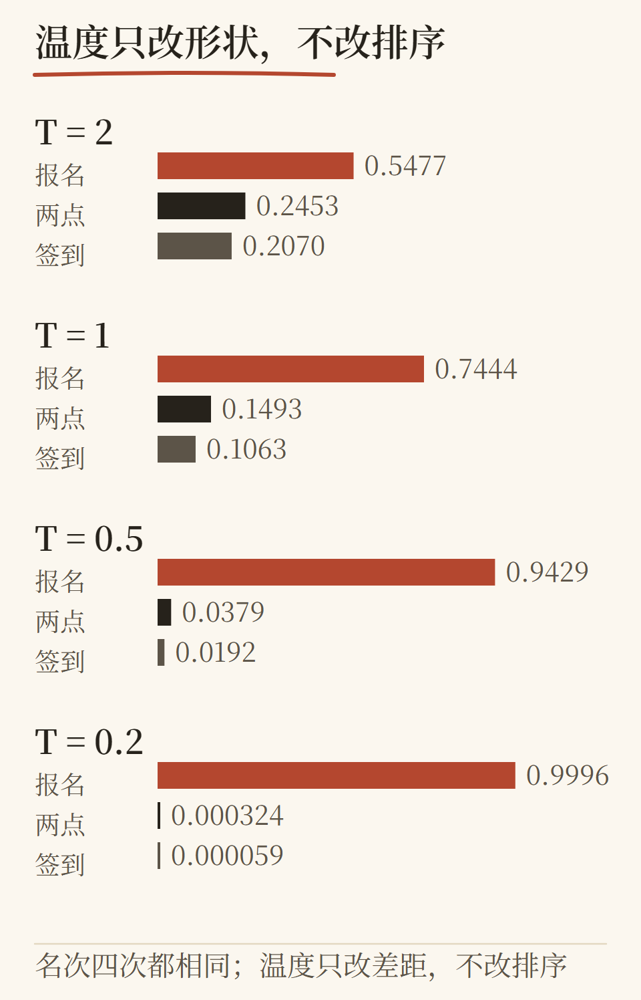
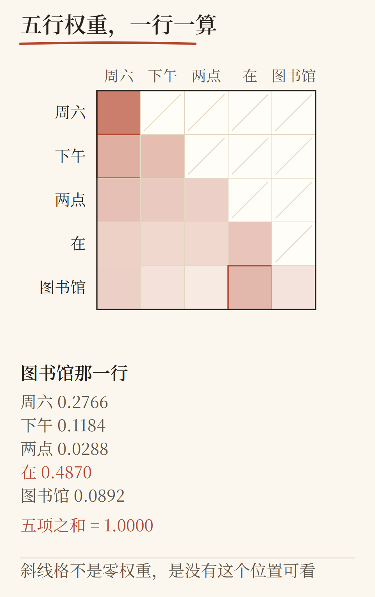
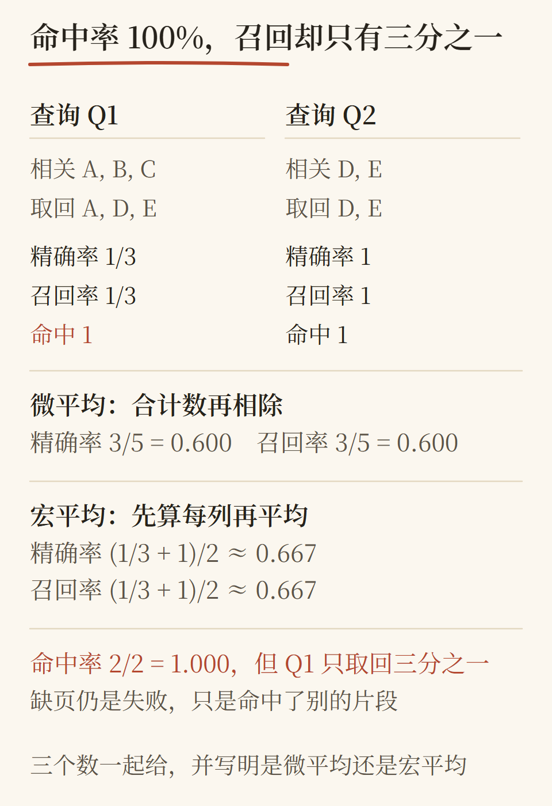

大模型不是玄学：一套五阶段三十章的通识课，这次把插图和算例都补齐了
我们把一本面向初学者的《大模型：从入门到精通》整理成了 30 章、469+ 页的书与网页课程。这一轮补上了应用与工程章节缺失的插图，并把书里所有公式改成了能在任何设备上直接阅读的形式。
这门课解决什么问题
市面上讲大模型的内容分两类：一类是"让你惊叹"的宏大叙事，一类是"让你搭起来"的接口教程。两者之间缺了一层：**你能不能对每个结论自己复算一遍？**
这门课按五个阶段推进，每一阶段都有一道能力门：
1. **会使用**：把一个真实模型跑起来，能解释每个参数在做什么；
2. **懂原理**：温度、注意力、梯度更新，都能在纸上重算一遍；
3. **能实现**：从零搭一个能查资料、能引用原文、能调工具的问答助手；
4. **会改进**：先冻结评测，再单变量对照改进，而不是凭感觉调参；
5. **独立交付**：换一个陌生题材，从干净环境完整交付，并接受别人的检查。
三个例子，看看它的讲法
温度不是" creativity 旋钮"

温度是给 logits 除一个系数再 softmax。课程用一张图把 T=0.5、T=1、T=2 三种分布画在同一根轴上，你可以自己拿计算器复核。
注意力是"加权平均的加权平均"

多头注意力不是玄学。课程用一个 5×5 矩阵把 Q、K、V 的每一步乘法都写出来，连四舍五入的位置都标出来。
检索评估里，hit@k=100% 也可能很糟

两个查询都"命中"了，但其中一个只取回了 1/3 的相关内容。微平均 0.600、宏平均 0.667——书上这两个数，你可以用 6 行 Python 复算。
这次改了什么
应用与工程章节每章补齐带数插图（C02/C13/C17/C18/C19/C22/C27/C28/C29/C30），每张图里的数字都来自对应章节正文，由测试守护；
清掉了 182 处原始 LaTeX——课程管线没有数学渲染器，原先 PDF 里会逐字印出 `\text{p95}=...`，现在全部改为代码与文本块；
全部插图统一到同一套纸质令牌，颜色只有一个来源文件。
怎么拿到它
网页版：仓库 `index.html` 直接打开，离线可用；
PDF / EPUB：`deliverables/` 下的四册（正文、答案、手绘版、练习册），EPUBCheck 0 错误 0 警告；
全部内容中文，配套英文版在 `en/`。
边界，说清楚
完整教学验收需要真实初学者与独立操作者：课程的技术部分（构建、真实推理、训练、OCR、评测）已完成并通过检查，但"读者学完能通过 K1–K5 能力门"这件事，需要真人完成，我们不替你宣布这一点。
欢迎把这份材料用于自学或内部培训。
（本篇由课程仓库 docs/wechat/2026-11-13-llm-course.md 生成；图片为书内插图重绘，数值与正文一致。）